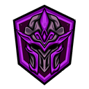

VERSIÓN AVANZADA GAMER v2.0.8
Anuncios Aniquilados
Aceleración Temporal
Autosalta, acelera y silencia anuncios
Filtra y remueve banners promocionales
Evade alertas y bloqueos de YouTube
Fuerza máxima tasa de bits y resolución
Nivelación de audio inteligente sin picos
Bloquea malware y estafas en la red